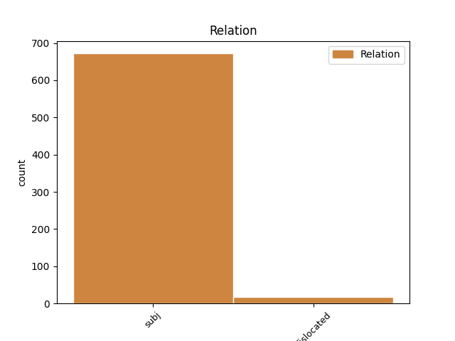
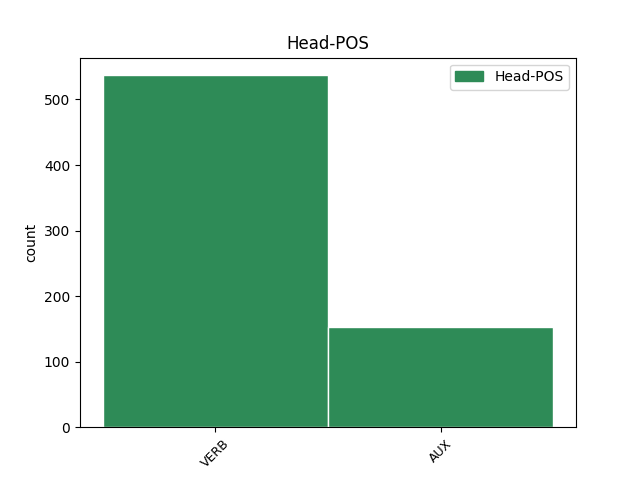
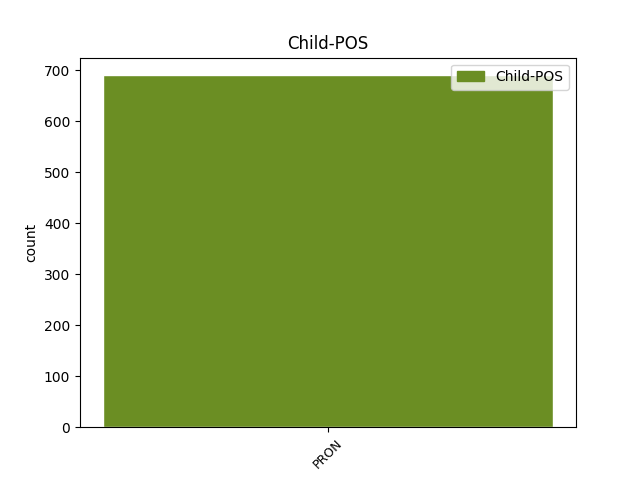

Distribution of features within this leaf



Agreement Rules sorted by frequency.
- When the dependent token is the subject(subj) of the head token, and the head token is VERB
1 وی وی PRON PRO Number=Sing|Person=3|PronType=Prs 2 subj _ _
2 افزود افزود#افزا VERB V_PA Number=Sing|Person=3|Tense=Past 0 _ _ _
3 : _ _ _ _ 0 _ _ _
4 الگوی _ _ _ _ 0 _ _ _
5 غذایی _ _ _ _ 0 _ _ _
6 نامناسب _ _ _ _ 0 _ _ _
7 مردم _ _ _ _ 0 _ _ _
8 باید _ _ _ _ 0 _ _ _
9 مورد _ _ _ _ 0 _ _ _
10 بازنگری _ _ _ _ 0 _ _ _
11 اساسی _ _ _ _ 0 _ _ _
12 قرار _ _ _ _ 0 _ _ _
13 گرفته _ _ _ _ 0 _ _ _
14 و _ _ _ _ 0 _ _ _
15 سبزیجات _ _ _ _ 0 _ _ _
16 تازه _ _ _ _ 0 _ _ _
17 ، _ _ _ _ 0 _ _ _
18 میوه _ _ _ _ 0 _ _ _
19 و _ _ _ _ 0 _ _ _
20 لبنیات _ _ _ _ 0 _ _ _
21 جایگزین _ _ _ _ 0 _ _ _
22 استفاده _ _ _ _ 0 _ _ _
23 از _ _ _ _ 0 _ _ _
24 انواع _ _ _ _ 0 _ _ _
25 چربیها _ _ _ _ 0 _ _ _
26 شود _ _ _ _ 0 _ _ _
27 . _ _ _ _ 0 _ _ _
1 ۵ _ _ _ _ 0 _ _ _
2 - _ _ _ _ 0 _ _ _
3 دل _ _ _ _ 0 _ _ _
4 خود _ _ _ _ 0 _ _ _
5 را _ _ _ _ 0 _ _ _
6 در _ _ _ _ 0 _ _ _
7 پوششی _ _ _ _ 0 _ _ _
8 از _ _ _ _ 0 _ _ _
9 رؤفت _ _ _ _ 0 _ _ _
10 و _ _ _ _ 0 _ _ _
11 محبت _ _ _ _ 0 _ _ _
12 و _ _ _ _ 0 _ _ _
13 لطف _ _ _ _ 0 _ _ _
14 به _ _ _ _ 0 _ _ _
15 رعیت _ _ _ _ 0 _ _ _
16 قرار _ _ _ _ 0 _ _ _
17 ده _ _ _ _ 0 _ _ _
18 و _ _ _ _ 0 _ _ _
19 برای _ _ _ _ 0 _ _ _
20 آنها _ _ _ _ 0 _ _ _
21 مبادا _ _ _ _ 0 _ _ _
22 به _ _ _ _ 0 _ _ _
23 صورت _ _ _ _ 0 _ _ _
24 درندهای _ _ _ _ 0 _ _ _
25 زیانبخش _ _ _ _ 0 _ _ _
26 باشی _ _ _ _ 0 _ _ _
27 که _ _ _ _ 0 _ _ _
28 خوردن _ _ _ _ 0 _ _ _
29 و _ _ _ _ 0 _ _ _
30 از _ _ _ _ 0 _ _ _
31 بین _ _ _ _ 0 _ _ _
32 بردن _ _ _ _ 0 _ _ _
33 آنها _ _ _ _ 0 _ _ _
34 غنیمت _ _ _ _ 0 _ _ _
35 شمری _ _ _ _ 0 _ _ _
36 زیرا _ _ _ _ 0 _ _ _
37 ایشان ایشان PRON PRO Number=Plur|Person=3|PronType=Prs 40 subj _ _
38 دو _ _ _ _ 0 _ _ _
39 گروه _ _ _ _ 0 _ _ _
40 ند هست AUX V_PRS Number=Plur|Person=3|Tense=Pres 0 _ _ _
41 ، _ _ _ _ 0 _ _ _
42 یا _ _ _ _ 0 _ _ _
43 برادر _ _ _ _ 0 _ _ _
44 دینی _ _ _ _ 0 _ _ _
45 تو _ _ _ _ 0 _ _ _
46 هستند _ _ _ _ 0 _ _ _
47 و _ _ _ _ 0 _ _ _
48 یا _ _ _ _ 0 _ _ _
49 بمانند _ _ _ _ 0 _ _ _
50 تو _ _ _ _ 0 _ _ _
51 انسانی _ _ _ _ 0 _ _ _
52 میباشند _ _ _ _ 0 _ _ _
53 . _ _ _ _ 0 _ _ _
1 حالا _ _ _ _ 0 _ _ _
2 ، _ _ _ _ 0 _ _ _
3 ما ما PRON PRO Number=Plur|Person=1|PronType=Prs 13 dislocated _ _
4 سیصد _ _ _ _ 0 _ _ _
5 ، _ _ _ _ 0 _ _ _
6 چهارصد _ _ _ _ 0 _ _ _
7 نفری _ _ _ _ 0 _ _ _
8 که _ _ _ _ 0 _ _ _
9 اینجا _ _ _ _ 0 _ _ _
10 آمدهایم _ _ _ _ 0 _ _ _
11 وظیفه _ _ _ _ 0 _ _ _
12 دیگری _ _ _ _ 0 _ _ _
13 داریم داشت#دار VERB V_PRS Number=Plur|Person=1|Tense=Pres 0 _ _ _
14 . _ _ _ _ 0 _ _ _
1 تو تو PRON PRO Number=Sing|Person=2|PronType=Prs 4 dislocated _ _
2 خود _ _ _ _ 0 _ _ _
3 هیچ _ _ _ _ 0 _ _ _
4 نیستی هست AUX V_PRS Number=Sing|Person=2|Polarity=Neg|Tense=Pres 0 _ _ _
5 و _ _ _ _ 0 _ _ _
6 همه _ _ _ _ 0 _ _ _
7 چیز _ _ _ _ 0 _ _ _
8 هستی _ _ _ _ 0 _ _ _
9 ، _ _ _ _ 0 _ _ _
10 زیرا _ _ _ _ 0 _ _ _
11 در _ _ _ _ 0 _ _ _
12 عین _ _ _ _ 0 _ _ _
13 درویشی _ _ _ _ 0 _ _ _
14 از _ _ _ _ 0 _ _ _
15 جهانی _ _ _ _ 0 _ _ _
16 بزرگتر _ _ _ _ 0 _ _ _
17 ی _ _ _ _ 0 _ _ _
18 . _ _ _ _ 0 _ _ _
Disagree Examples:
1 ببینم دید#بین VERB V_SUB Mood=Sub|Number=Sing|Person=1|Tense=Pres 0 _ _ _
2 حسینی _ _ _ _ 0 _ _ _
3 ، _ _ _ _ 0 _ _ _
4 تو تو PRON PRO Number=Sing|Person=2|PronType=Prs 1 subj _ SpaceAfter=No
5 … _ _ _ _ 0 _ _ _
1 خود خود PRON PRO Number=Sing|Person=3|PronType=Prs|Reflex=Yes 3 subj _ _
2 م _ _ _ _ 0 _ _ _
3 میارم _ VERB V_PRS Number=Sing|Person=1|Tense=Pres 0 _ _ _
4 ، _ _ _ _ 0 _ _ _
5 خب _ _ _ _ 0 _ _ _
6 پدر _ _ _ _ 0 _ _ _
7 نیمخیز _ _ _ _ 0 _ _ _
8 میشود _ _ _ _ 0 _ _ _
9 که _ _ _ _ 0 _ _ _
10 از _ _ _ _ 0 _ _ _
11 جا _ _ _ _ 0 _ _ _
12 بلند _ _ _ _ 0 _ _ _
13 شود _ _ _ _ 0 _ _ _
14 . _ _ _ _ 0 _ _ _
1 بیا آمد#آ VERB V_IMP Mood=Imp|Number=Sing|Person=2 0 _ _ _
2 خود خود PRON PRO Number=Sing|Person=3|PronType=Prs|Reflex=Yes 1 subj _ _
3 م _ _ _ _ 0 _ _ _
4 کمک _ _ _ _ 0 _ _ _
5 ت _ _ _ _ 0 _ _ _
6 کنم _ _ _ _ 0 _ _ _
7 . _ _ _ _ 0 _ _ _
1 پدر _ _ _ _ 0 _ _ _
2 : _ _ _ _ 0 _ _ _
3 [ _ _ _ _ 0 _ _ _
4 با _ _ _ _ 0 _ _ _
5 شنیدن _ _ _ _ 0 _ _ _
6 صدای _ _ _ _ 0 _ _ _
7 رادیو _ _ _ _ 0 _ _ _
8 ] _ _ _ _ 0 _ _ _
9 احمد _ _ _ _ 0 _ _ _
10 جان _ _ _ _ 0 _ _ _
11 ، _ _ _ _ 0 _ _ _
12 تو تو PRON PRO Number=Sing|Person=2|PronType=Prs 16 dislocated _ _
13 گناه _ _ _ _ 0 _ _ _
14 ت _ _ _ _ 0 _ _ _
15 کمتر _ _ _ _ 0 _ _ _
16 ه است AUX V_PRS Number=Sing|Person=3|Tense=Pres 0 _ _ _
17 بابا _ _ _ _ 0 _ _ _
18 ، _ _ _ _ 0 _ _ _
19 دم _ _ _ _ 0 _ _ _
20 افطاری _ _ _ _ 0 _ _ _
21 دعا _ _ _ _ 0 _ _ _
22 کن _ _ _ _ 0 _ _ _
23 بندههای _ _ _ _ 0 _ _ _
24 خوبی _ _ _ _ 0 _ _ _
25 باشیم _ _ _ _ 0 _ _ _
26 . _ _ _ _ 0 _ _ _
1 با _ _ _ _ 0 _ _ _
2 این _ _ _ _ 0 _ _ _
3 کارها _ _ _ _ 0 _ _ _
4 ما ما PRON PRO Number=Plur|Person=1|PronType=Prs 10 subj _ _
5 ارتباط _ _ _ _ 0 _ _ _
6 مان _ _ _ _ 0 _ _ _
7 با _ _ _ _ 0 _ _ _
8 مخاطب _ _ _ _ 0 _ _ _
9 قطع _ _ _ _ 0 _ _ _
10 شده کرد#کن AUX V_PP Number=Sing|Person=3|VerbForm=Part 0 _ _ _
11 . _ _ _ _ 0 _ _ _